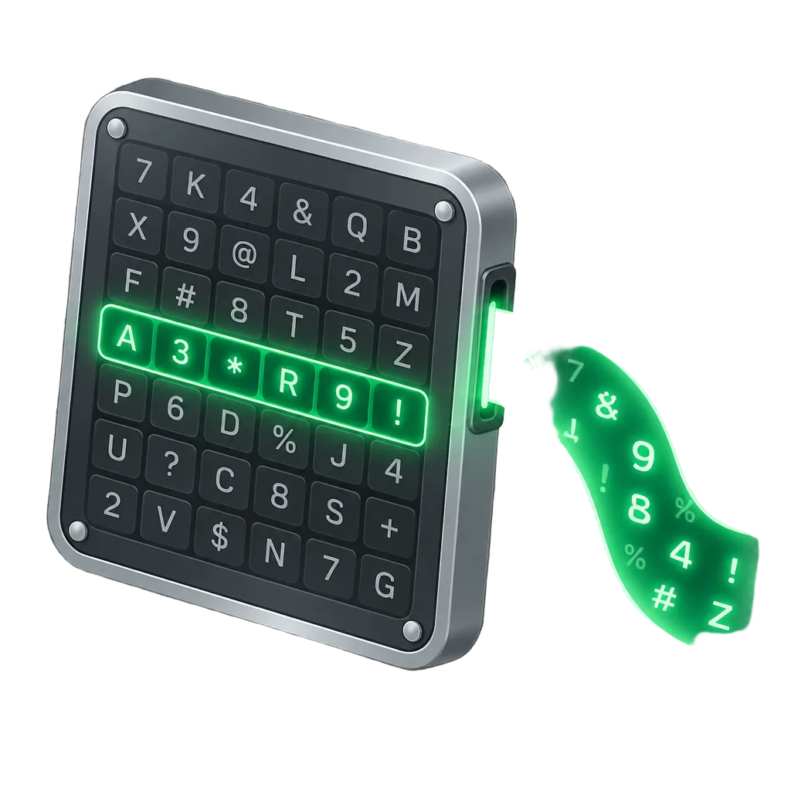
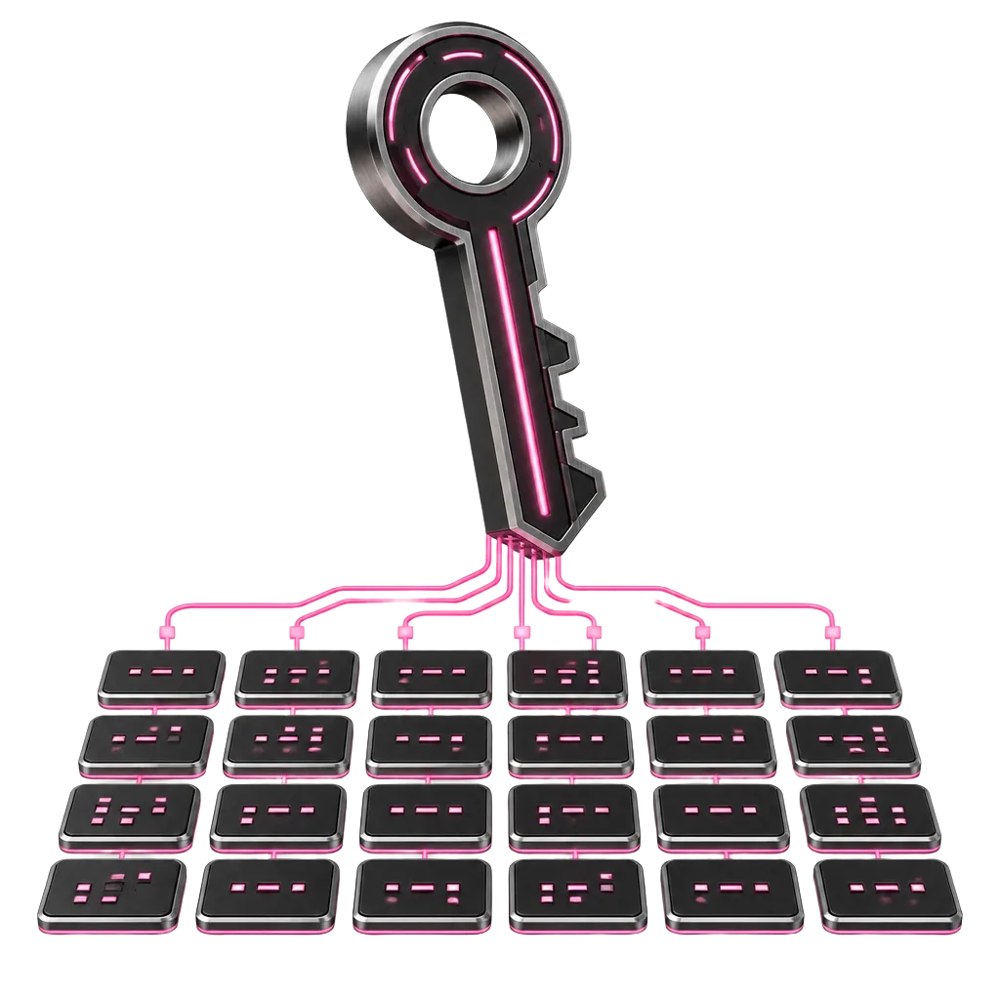
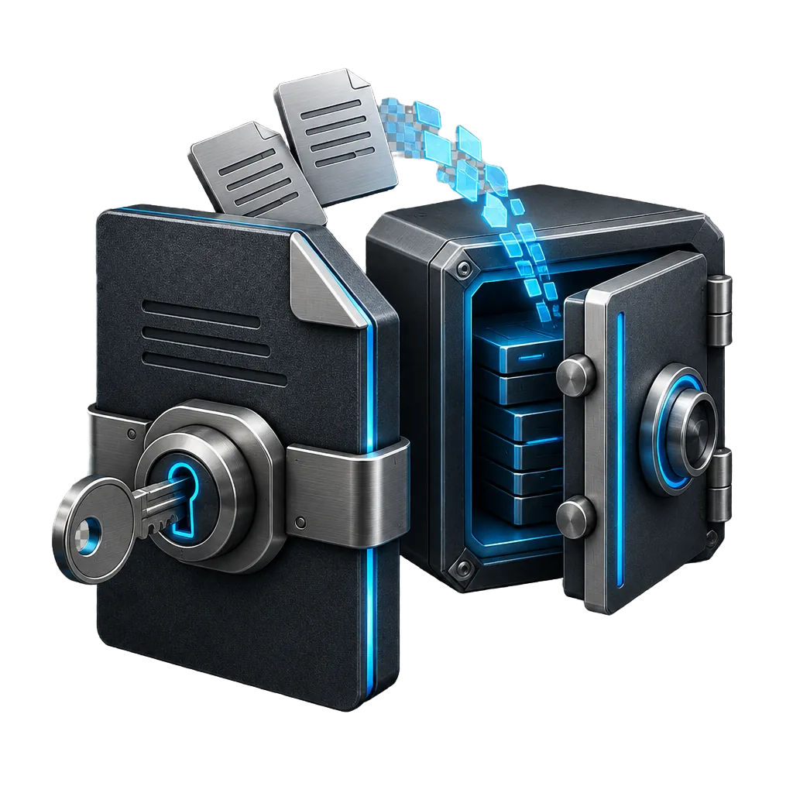
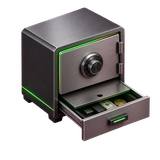
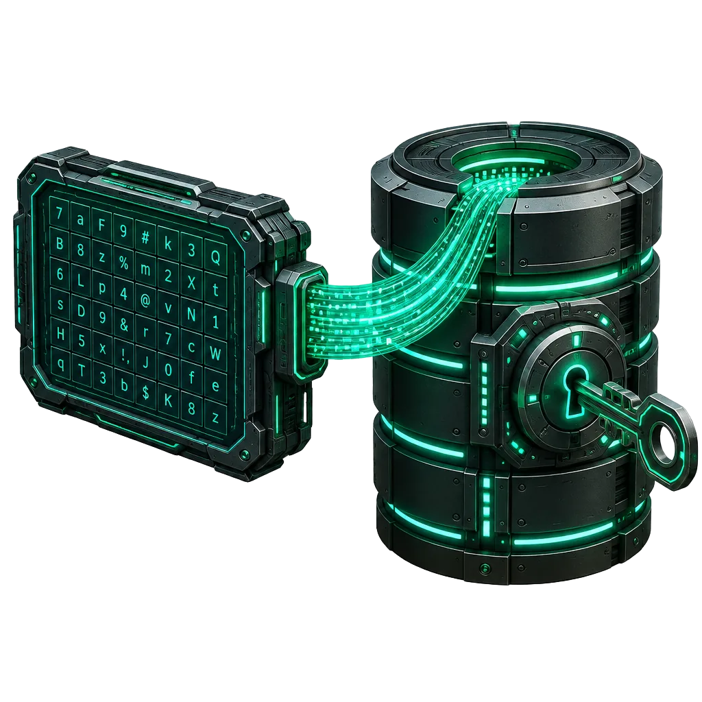

MATRIX CIPHER DECK
暗号マトリックス＆マイ・レシピ管理
カード配列からパスワードを決定論的に算出・バックアップ
📖 作成手順
✅ 使用中：1. マイレシピ

かんたんモード
未選択（1. マイレシピ使用中）
物理カード単体でも手作業で再現できます。どちらかを選んで「このモードを使う」を押してください。
暗証番号（数字のみ）
未選択対応するマスの左上を読む。足りなければ次のマスから左上を順に読み足す。
パスワード（英数・記号）
未選択本文は左下。末尾4文字は「英大・英小・数字・記号」の順に追加。
区切りなしで入力（例：-_!#）。
物理カードでの読み取り手順
- 英字A〜Zは小文字として中央のマスを探す。中央にない文字（ドット・空白・日本語など）は飛ばす。「-」「/」「^」「%」は中央にあるので使う。
- サイト名→合言葉の順に読む。「暗証番号」は左上、「パスワード」の本文は左下。
- 禁止記号に当たったら、次のマスの左下へ進み、許可された文字まで飛ばす。次の入力文字は、その文字の中央マスから改めて探す。
- 本文が足りなければ、最後に採用したマスの次から同じ角を読み足す。順序は左→右、行末は次の行の左端、右下の次は左上。
- 「パスワード」では、最後の4文字を残して本文を作る。その次から右上の英大文字を探して採用→さらに次から右上の英小文字を探して採用→次のマスの左上数字→さらに次から左下の許可記号を探して採用。
【使用中】1. マイレシピ
許可記号がカード上に存在しない場合は安全のため生成を停止します。合言葉や設定はカードとは別の場所で管理してください。
マイレシピ詳細設定
✅ 使用中
1キーワード結合・抽出
文字 / ステップ
2マス目の位置シフト
マス
マス
3読み取り角・取得順
4記号ルール・代替移動
マス
5先頭追加（前ソルト）
マス分ずらす / 指定マス番号
6末尾追加（後ソルト）
マス分ずらす / 指定マス番号
7起点マス（アンカー）
文字目の後ろに挿入
8並び替え・文字数
文字
復元フレーズ（24単語・暗号化なし）

現在の設定を BIP39規格（24単語） と QRコード として自動作成・表示します（暗号化なし）。
💡
いずれか1つの形式で保存すれば復元できます
作成・保存
転送・検証
⚠️ 警告：暗号化なしの24単語フレーズ・QRコードはクラウドに保存しないでください
クラウドメモ・メール・写真フォルダへの平文保存は情報流出の原因となります。紙に控えてオフライン保管するか、下の「暗号化バックアップ」をご利用ください。
暗号化なしの自動バックアップです。
暗号化バックアップ・復元

🛡️ 保護方法（複数選択可）:
現在の保護方式：パスワード単独
🔑 連動カード番号:
#0
※現在のカード番号と連動して暗号鍵が導出されます。
任意のファイルを選択するか、「KeePassキーファイル(.key)生成」で作成したファイルを保管してください。
🔐 パスキー保護（WebAuthn PRF）：
WebAuthn PRF対応のパスキーで暗号化・復元が可能です。
WebAuthn PRF対応のパスキーで暗号化・復元が可能です。
※PRF非対応環境では登録・復元できない場合があります。その場合は「パスワード」または「キーファイル」をご利用ください。
パスワード・キーファイル・パスキーはバックアップ内に記録されないため、別の場所で管理してください。秘密分散を選択した場合は、各シェアを別々の場所に分けて保管してください。
💡
いずれか1つの形式で保存すれば復元できます
作成・保存
転送・検証
表示管理
QRコード・復元フレーズから復元
QRコードの読み取り、または復元フレーズの貼り付けで復元します。
復元の手順
- 1読み込み・入力
- 2検証して内容を確認
- 3復元を実行
QR画像 / .cmenc / .txt（複数可）
※作成時と同じカード番号（デフォルト: 0）と一致する場合のみ復号されます。
✓ 検証済みの内容
印刷後は必ず復元テストを実施してから元データを破棄してください。
データ暗号化（テキスト・ファイル）
🛡️ 完全ローカル
テキストやファイルを外部送信ゼロで暗号化・分割保存・復号できます。
対象:
※すべてブラウザ内で暗号化されます。復号時に元のファイル名も復元されます。
🛡️ 保護方法（複数選択可）:
現在の保護方式：パスワード単独
🔑 連動カード番号:
#0
※現在のカード番号と連動して暗号鍵が導出されます。
任意のファイルを選択するか、「KeePassキーファイル(.key)生成」で作成したファイルを保管してください。
🔐 パスキー保護： 生体認証またはセキュリティキー（YubiKey）で保護します。
✅ 暗号データの作成完了
💡
いずれか1つの形式で保存すれば復元できます
※作成時と同じカード番号（デフォルト: 0）と一致する場合のみ復号されます。
✅ 復号に成功しました
結果の保存
表示管理
タイムカプセル（指定時刻まで開けない暗号化）
⏳ drand tlock ＋ 二重保護
1. 対象データ
※解禁時に元のファイル名で復元されます。
2. 保護タイプ
3. 解禁日時
クイック：
4. 秘密分散・追加保護
🔑 連動カード番号:
#0
※現在のカード番号と連動して暗号鍵が導出されます。
🛡️ 追加保護（複数選択可）:
任意のファイルを選択するか、「KeePassキーファイル(.key)生成」で作成したファイルを保管してください。
⚠️ 【重要：パスキー併用時のドメイン制限】
WebAuthnパスキーはブラウザ仕様により現在のドメインに拘束されます。長期保管では端末変更等で開けなくなるリスクがあるため、「パスワード ＋ キーファイル」または「秘密分散」を推奨します。
WebAuthnパスキーはブラウザ仕様により現在のドメインに拘束されます。長期保管では端末変更等で開けなくなるリスクがあるため、「パスワード ＋ キーファイル」または「秘密分散」を推奨します。
カプセルの保存
作成・保存
転送・検証
表示管理
生成パスワード：
✅ 使用中：1. マイレシピ
ℹ️ 旧形式パスキー保護データの復元
読み込まれたバックアップデータは、旧バージョンのパスキー保護形式（旧PKv2形式）で作成されています。
ℹ️ ご案内：
旧PKv2形式は以前の環境向け形式です。このデータを復号して設定を復元（救出）しますか？
※許可すると、このセッション内で旧形式の救出・復号を実行します。
復元完了後、安全のため「拡張バックアップ」で最新のバックアップ（最新パスキーまたはパスワード保護）を再作成することをおすすめします。
旧PKv2形式は以前の環境向け形式です。このデータを復号して設定を復元（救出）しますか？
※許可すると、このセッション内で旧形式の救出・復号を実行します。
復元完了後、安全のため「拡張バックアップ」で最新のバックアップ（最新パスキーまたはパスワード保護）を再作成することをおすすめします。
🛡️ 暗号化バックアップ作成オプション
通常は「🔒 このまま本命のみで作成（通常）」を押せば安全に作成完了します。
🛡️ 二重暗号・別パスワード表示（Duress Mode / 強要対策）：
強盗や脅迫・強要時に、本命とは異なるパスワードを入力することで無害な日常情報（ダミーデータ）を表示させる【別パスワード表示機能（Duress/おとりスロット）】です。（※暗号化構造上、2スロット形式であることはファイル解析により判別可能です。身体的安全や存在の完全な秘匿を保証するものではありません）
強盗や脅迫・強要時に、本命とは異なるパスワードを入力することで無害な日常情報（ダミーデータ）を表示させる【別パスワード表示機能（Duress/おとりスロット）】です。（※暗号化構造上、2スロット形式であることはファイル解析により判別可能です。身体的安全や存在の完全な秘匿を保証するものではありません）

二重金庫（おとり・ダミー偽装）の設定：
💡 重要：強盗や脅迫を受けた際にとっさに思い出せるよう、自分が昔使っていた古いパスワードや記憶しやすい合言葉など、ご自身が確実に覚えているパスワード（12文字以上）を設定してください。
※脅迫者におとりパスワードを教えると、この実在サイトの無害なダミー情報が復元されます：
💡 重要：強盗や脅迫を受けた際にとっさに思い出せるよう、自分が昔使っていた古いパスワードや記憶しやすい合言葉など、ご自身が確実に覚えているパスワード（12文字以上）を設定してください。
※脅迫者におとりパスワードを教えると、この無害なダミーメモが復元されます：
※緊急時に別のパスワードでダミーデータを表示できるデュアルスロット暗号化機能です
⚠️ 重要事項とリスクの確認・同意
暗号化・生成を実行する前に、以下の重要事項および保証範囲をご確認ください。
🔑 KeePassキーファイル (.key) 作成・復元オプション

カードの配列シードから、KeePass 2.x / KeePassXC / KeePass で使える暗号キーファイル（.key）を書き出します。
万が一の紛失や再発行時に、どのようにキーファイルを復元（再生成）するかを選択してください。
万が一の紛失や再発行時に、どのようにキーファイルを復元（再生成）するかを選択してください。
💳 対象カードシード番号:
🛡️ キーファイルの復元ポリシー（生成方式）：
1
かんたんモード
すぐ生成
タイムシークレット（チェックイン型・時限金庫）
登録なし（0件）定期チェックインで維持される時限金庫を複数管理できます。
まだ作成されていません
定期チェックインまたは指定日時まで維持したいテキストやファイルを、用途ごとに複数保管できます。
| 名前 / 認証構成 | 状態 | 最終チェックイン | 次の期限 | 操作 |
|---|
1. 名前と対象データ
※復号時に元のファイルとしてダウンロードできます。
2. 期限設定
🧪 動作確認用設定：1分未満の設定はテスト専用です。通常の保管運用では十分な猶予期間を設定してください。
3. 認証方式
3-2. チェックインの認証
期限の延長に必要です
⚡ 簡易チェックイン（認証なし）：チェックイン時は認証ダイアログを表示せずワンクリックで期限を延長します。データの復号および金庫削除・設定変更にはそれぞれの認証が引き続き要求されます。
✓ 暗号化用パスワードと同じ文字列でチェックインを照合します（チェックイン時に暗号化鍵は復元されず、独立した専用検証値で照合されます）。
✓ 暗号化用キーファイルと同じファイルでチェックインを照合します（暗号鍵は流用せず独立した検証値で照合されます）。
専用キーファイル未選択
ℹ️ 既存パスキー利用モード：端末に登録済みの生体認証器（WebAuthn PRF）をチェックイン用として利用します。
3-3. 管理操作の認証方式
金庫の削除・認証設定変更・チェックイン用パスキー変更・期限設定変更を保護します
4. デバイス鍵と保証範囲の確認
- 起動時判定：ブラウザを閉じている間は期限切れ処理が動作しません（次回起動・タブ復帰時に金庫ごとに判定・削除されます）。
- 通知の補助性：PWA通知は補助機能であり、環境やバックグラウンド状態によって届かない場合があります。
- プロファイル復元：ブラウザのプロファイル全体をバックアップから復元すると、期限や試行回数を巻き戻せる可能性があります。
- 時計検知の性質：時計巻き戻し検知（
lastSeenより5分以上の逆行検知）は実際の経過時間を証明する仕組みではなく、海外旅行やOS時刻修正でも時計異常モードに入る場合があります（時計異常だけで鍵は破棄されず、通常と同じ復号操作でデータを取り出せます）。 - 物理ストレージの制約：期限切れ時は該当する金庫の非抽出可能なデバイス鍵と暗号データのみを破棄して読み戻し検証しますが、SSD等の物理セクタやOSバックアップ上の全データ完全消去を保証するものではありません。
- デバイス鍵喪失時の復旧不可：各タイムシークレットはこのブラウザ内の専用デバイス鍵と結合されます。サイトデータ消去・端末紛失等でデバイス鍵を失うと、パスワード・キーファイル・パスキーが残っていても復号できません。
状態
—
最終チェックイン
—
次の期限
—
期限までの残り時間
—
⚠️ 時計異常・復旧待ち (CLOCK_SUSPECT)
端末時計の巻き戻し（5分以上の逆行）を検知したため、この金庫のチェックインおよび期限延長を停止しています。
※誤検知でデータを失わないよう鍵は保持されています。デバイス鍵と作成時の暗号化認証情報が揃っていれば、下の「復号してデータを取り出す」から通常どおり復号・保存できます。
※誤検知でデータを失わないよう鍵は保持されています。デバイス鍵と作成時の暗号化認証情報が揃っていれば、下の「復号してデータを取り出す」から通常どおり復号・保存できます。
🚨 削除失敗 (DELETE_FAILED) — 「消去済み」ではありません
🛡️ 鍵の破棄を確認済み (DESTROYED)
※この金庫の専用デバイス鍵と暗号化データのみがIndexedDBから削除されたことを読み戻し検証で確認済みです（他のタイムシークレットには影響ありません）。期限切れ金庫のチェックイン復活はできません。
🔓 復号・データ取り出し（暗号化認証ポリシーで検証）
※作成時と同じカード番号（デフォルト: 0）と一致する場合のみ復号されます。
ℹ️ 旧バージョン互換金庫（カード配列シード非連動）：現在のカード配列シード番号を変更していても作成時の認証情報のみで復号できます。
キーファイル未選択
暗号化パスキー認証必須：復号ボタンを押すと端末の生体認証／セキュリティキー確認が起動します。
⚙️ 個別設定・認証管理（期限設定・チェックイン認証／パスキー変更・管理認証・PWA通知）
① 期限設定の変更（管理操作認証で保護）
② チェックイン認証・チェックイン用パスキーの変更（管理操作認証で保護）
キーファイル未選択
⚠️ 新しいチェックイン用パスキーを登録・検証してください（管理操作認証を通過するまで保存されません）。
③ 管理操作認証ポリシーの変更（再認証必須・認証なし不可）
キーファイル未選択
⚠️ 新しい管理用パスキーを登録・PRF検証してください。
🔔 PWA期限接近通知（期限の24時間前・1時間前）
🗑️ このタイムシークレットの個別削除（管理操作認証で保護）
管理操作認証ポリシーと対象確認のうえ、この金庫のみを削除します（他の金庫には影響しません）。
ℹ️ タイムシークレットの保証範囲・技術的注意事項（6項目）
- ブラウザを閉じている間は期限切れ処理が動作しません（次回起動・復帰時に金庫単位で判定・削除されます）。
- PWA通知は補助機能であり、OS・ブラウザ環境やバックグラウンド制約により届かない場合があります。
- ブラウザのプロファイル全体をバックアップから復元すると、期限や試行回数を巻き戻せる可能性があります。
- 時計巻き戻し検知（
lastSeen比較）は記録上の時刻逆行を検知するものであり、実際の経過時間を証明する仕組みではありません。 - 非抽出可能なデバイス鍵の破棄により復号不能化を目指しますが、SSD等の物理ストレージ上の全データ消去を保証するものではありません。
- サイトデータ消去等でデバイス鍵を失った場合、パスワード・キーファイル・パスキーが残っていても復号できません。
データ転送（オフラインQR送受信）
待機中QRコードとカメラだけで、端末間のファイル・テキストを完全オフラインで転送します。
1. 送信データ
message.txt として送信されます。
2. 送信設定
読み取りづらい場合は 6〜10 枚/秒 に下げてください。
スマホ同士は 400〜800 B が安定します。
送信データを処理しています…
3. QRコード表示（タップで再生／一時停止）
先頭QRを受信側で読み取ってから送信開始QRコード未準備
上の「QRコードを準備」を押すと、ここに先頭QRコードが表示されます
状態
待機中
データサイズ / 総ブロック
—
現在のフレーム
—
送信ブロックマップ（タップでその位置から再生）
「QRコードを準備」を実行すると表示されます。
✅ 受信・復元完了（CRC32確認済み）
復元サイズ
—
所要時間
—
実効速度
—
1. カメラ読み取り
読み取り方式: ZXing-C++ WASM
カメラ停止中
「カメラでQR読取」を押した後、送信側でQR表示を開始してください
受信完了！
取得済み / 総ブロック
0 / 0
残りブロック
—
LT修復で復元
0
受信ブロックマップ
直接取得
LT修復復元
未取得
読み取りを開始すると、ブロックごとの取得状態が表示されます。